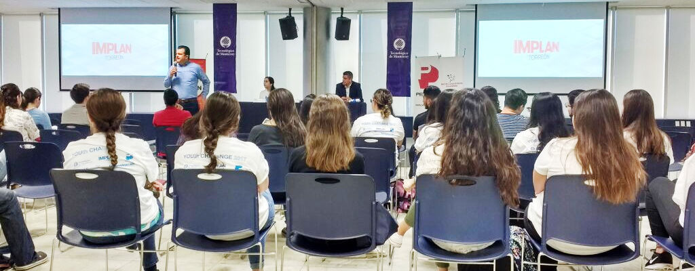
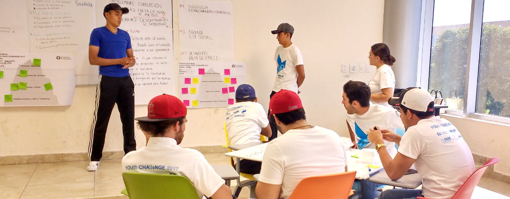
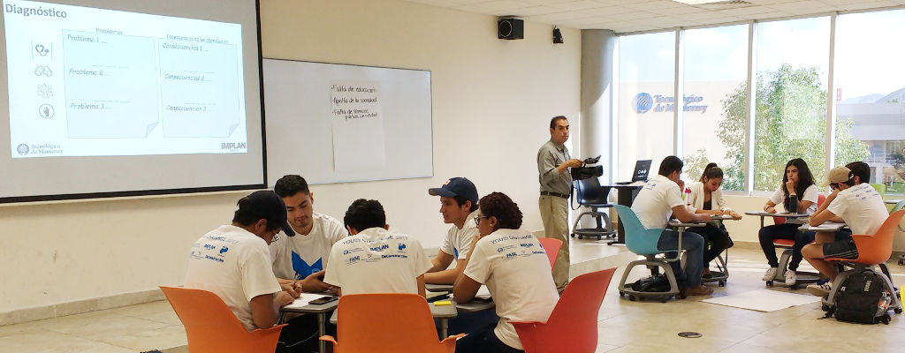

El 6 de octubre se llevó a cabo la inauguración del encuentro Laguna Y2040 Youth Challenge organizado por el IMPLAN y el Tecnológico de Monterrey, con la participación de alrededor de 200 jóvenes estudiantes, miembros del programa de liderazgo Action Leadership for an Amazing World (ALFAW).
Se contó con la presencia del director del Tec de Monterrey Campus Laguna, Carlos Bejos; del director del IMPLAN Torreón, Eduardo Holguín; y de Miguel Wong Sánchez, miembro del Consejo de Educación y Tecnología de la Laguna A.C.
En la bienvenida, el director del IMPLAN habló sobre la importancia de la participación ciudadana entre los jóvenes. Dijo que este tipo de encuentros como el LagunaY2040, permite que los jóvenes apliquen en situaciones reales los conceptos aprendidos en los libros, internet y el salón de clases.
Asimismo, señaló que esto permite que los sectores públicos y privados encargados de la toma de decisiones, escuchen las opiniones de los jóvenes y se pueden aprovechar sus ideas innovadoras para resolver problemas. Enfatizó en que estos ejercicios, empoderan a las nuevas generaciones.
El objetivo del encuentro fue que los jóvenes pudieran analizar la realidad de su región y diseñar estrategias de desarrollo para un futuro mejor, en un horizonte de tiempo al 2040.
La segunda sesión se realizó el 14 de octubre, con la bienvenida del director del Tec de Monterrey Campus Laguna, Carlos Bejos Acebo. El análisis de los estudiantes se realizó tomando como base los seis ejes del Plan Estratégico TRC2040: Buen Gobierno, Desarrollo Económico, Desarrollo Social, Entorno Urbano, Movilidad y Transporte y Medio Ambiente y Sustentabilidad.

La metodología, orientada por el IMPLAN y adaptada por el Tecnológico de Monterrey estuvo dividida en cuatro partes: Diagnóstico, Visión, Estrategia y Mi Acción de Liderazgo. Los jóvenes determinaron en equipo los principales problemas del diagnóstico, seleccionaron un problema prioritario y generaron una visión hacia el 2040.
Los proyectos propuestos y puestos en marcha por los jóvenes serán publicados en breve en la plataforma del IMPLAN trcimplan.gob.mx como seguimiento del impacto del encuentro.
